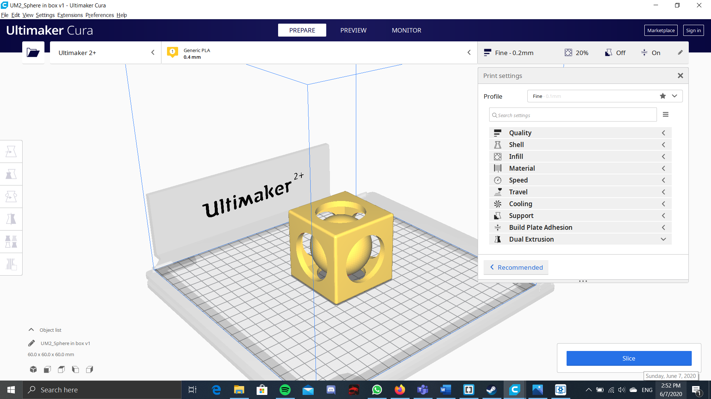

For 3D printing, we use fusion 360 to draw the Model. Then it has to coverted to a stl file, where it can then be opened in the 3D printing software. For the 3D printing software, we will be using ultimaker cura. We also have to set the 3D printer as the ultimaker 2+. Once that is set, it can start to be spliced. You can also set the other settings like the speed of the 3D printer or the infill for the 3D model. This will all effect the time of the print job which is very important as you will not be able to do the print job if you are not in the lab, or if the lab is closed. You can also choose what material you would like to use, but as the lab only provides , that would be the only material you could currently use in the print.

Actually for the settings, you CAN tweak afew, like the infill denisty, whether or not to generate supports, the speed(but not more than 80%). ONce this is done, get the SD card from the 3d Printer, open up curamaker, slice and send the file to the SD card. Place the SD card back, start printing the file and make sure that the first few layers of the print are sticking to the base of the 3d printer. Once this is done, then just let it print for the duration, let it cool for abit when it is done, and VOLIA, your print is done. There is not really much to 3D printing actually, since most of your time will be spent in your #D designing software like fusion or inventor.